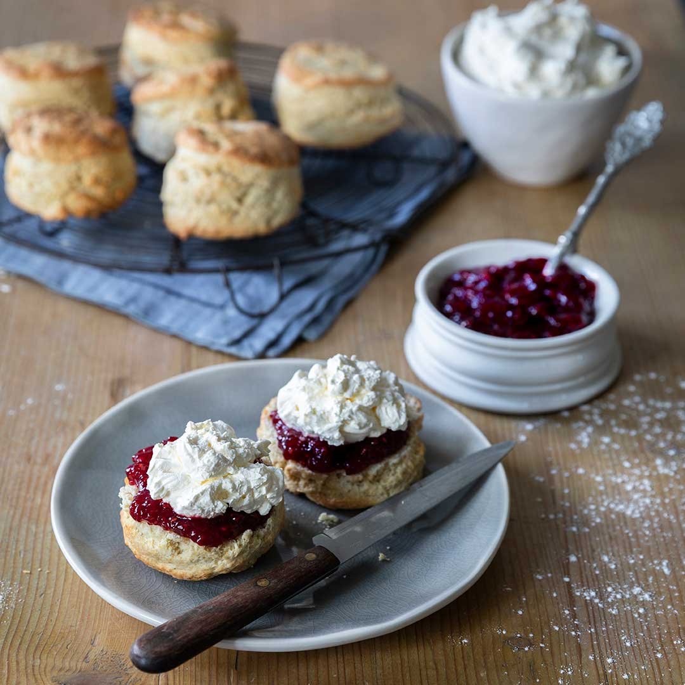

Scones

Description
Simple recipe for plain scones. Recipe makes roughly 8 scones. You can swap out the buttermilk for milk (add a drop of lemon juice if you have some).
Ingredients
- Cream flour - 500g
- Baking powder - 30g
- Butter -120g
- Caster SUgar - 120g
- Eggs - 100g
- Buttermilk -120g
- Chocolate/Sultanas/any other topping of your choice - 80g
Method
- Sieve flour & baking powder
- Rub butter into flour mixture
- Mix in caster sugar, eggs, & buttermilk
- Add toppings
- (Mix Dry & Wet ingredients to a dough. KNead just until a dough is formed so its crumbly when baked, don't over mix)
- Put cling film over it while resting and cleaning up
- Flatten with rolling pin to roughly 3 inches
- Double brush the tops with egg wash
- 210℃ for 15-20mins